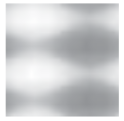
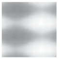
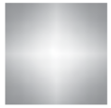

10.5 半色调¶
Halftones
10.5.1 概述¶
General
半色调处理（Halftoning）是一种通过在只能显示有限数量离散颜色的输出设备上模拟连续色调颜色的方法。设备无法直接生成的颜色可通过使用可用颜色的像素图案来模拟。
注意 1
最常见的例子可能是在报纸照片中，使用黑白像素来呈现灰色调。
某些输出设备可以直接再现连续色调的颜色，这些设备不需要进行半色调处理；在传递函数执行伽马校正后，颜色分量应直接传输到设备。对于需要半色调处理的设备，该过程应在所有颜色分量经过适用的传递函数转换后进行。半色调函数的输入应为设备本机颜色空间中的连续色调、伽马校正后的颜色分量，而其输出应为设备可再现的颜色像素。
PDF 允许对半色调处理过程的细节进行高度控制。
注意 2
在低分辨率显示设备上进行渲染时，需要对半色调图案进行精细控制，以获得最佳的灰度或颜色逼近效果，并尽量减少视觉伪影。
注意 3
在彩色印刷中，可以为多个不同的色彩分量分别指定独立的半色调网屏。
注意 4
请记住，与半色调处理相关的所有内容本质上都是设备相关的。当 PDF 文件自行指定半色调设置时，通常会牺牲其可移植性。每个输出设备都有适用于大多数用途的默认半色调定义。只有相对复杂的文件才需要定义自己的半色调以实现特殊效果。为了获得正确的结果，一个定义新半色调的 PDF 文件依赖于关于设备空间分辨率和方向的某些假设。半色调参数的最佳选择通常取决于输出设备的具体物理特性，例如像素形状、像素之间的重叠情况，以及电子或机械噪声的影响。
所有半色调均应在设备空间中定义，并且不受当前变换矩阵的影响。
Halftoning is a process by which continuous-tone colours are approximated on an output device that can achieve only a limited number of discrete colours. Colours that the device cannot produce directly are simulated by using patterns of pixels in the colours available.
NOTE 1
Perhaps the most familiar example is the rendering of gray tones with black and white pixels, as in a newspaper photograph.
Some output devices can reproduce continuous-tone colours directly. Halftoning is not required for such devices; after gamma correction by the transfer functions, the colour components shall be transmitted directly to the device. On devices that do require halftoning, it shall occur after all colour components have been transformed by the applicable transfer functions. The input to the halftone function shall consist of continuous- tone, gamma-corrected colour components in the device’s native colour space. Its output shall consist of pixels in colours the device can reproduce.
PDF provides a high degree of control over details of the halftoning process.
NOTE 2
When rendering on low-resolution displays, fine control over halftone patterns is needed to achieve the best approximations of gray levels or colours and to minimize visual artifacts.
NOTE 3
In colour printing, independent halftone screens can be specified for each of several colorants.
NOTE 4
Remember that everything pertaining to halftones is, by definition, device-dependent. In general, when a PDF file provides its own halftone specifications, it sacrifices portability. Associated with every output device is a default halftone definition that is appropriate for most purposes. Only relatively sophisticated files need to define their own halftones to achieve special effects. For correct results, a PDF file that defines a new halftone depends on certain assumptions about the resolution and orientation of device space. The best choice of halftone parameters often depends on specific physical properties of the output device, such as pixel shape, overlap between pixels, and the effects of electronic or mechanical noise.
All halftones are defined in device space, and shall be unaffected by the current transformation matrix.
10.5.2 半色调屏幕¶
Halftone Screens
一般而言，半色调方法基于 半色调网屏（halftone screen）的概念，该网屏将设备像素阵列划分为单元格（cells），可以对这些单元格进行修改，以实现所需的半色调效果。网屏的定义方式是在设备像素阵列上构建一个均匀的矩形网格。每个像素属于网格中的一个单元格，而一个单元格通常包含多个像素。网屏网格应完全在设备空间中定义，并且不受当前变换矩阵的影响。
注意
这一特性对于确保相邻的半色调着色区域能够正确拼接而不会产生可见的接缝至关重要。
在二值（黑白）设备上，可以通过在网屏的单元格中部分像素设为黑色、部分设为白色来模拟灰色调。从数值上来看，单元格内产生的灰度级应为白色像素数量与单元格总像素数量的比值。一个包含 n 个像素的单元格可以表示 n + 1 种不同的灰度级，范围从所有像素为黑色到所有像素为白色。对于 0.0 到 1.0 范围内的灰度值 g，应通过使 i 个像素变为白色来实现，其中 i = floor (g × n)。
上述描述同样适用于彩色输出设备，这些设备的像素由完全开启或完全关闭的原色组成。大多数彩色打印机（但不是彩色显示器）都是以这种方式工作的。半色调应独立应用于每个颜色分量，从而生成该颜色的不同色阶。
无论颜色分量最初是以加法模式（RGB 或 gray）还是减法模式（CMYK 或色调）指定的，所有颜色分量均应以加法形式输入到半色调处理机制中。在加法设备（如显示器）中，颜色分量的较大值表示更亮的颜色，而在减法设备（如打印机）中，较大值表示更少的油墨量。传递函数会生成以加法形式表示的颜色值；详见 10.4“传递函数”。
In general, halftoning methods are based on the notion of a halftone screen, which divides the array of device pixels into cells that may be modified to produce the desired halftone effects. A screen is defined by conceptually laying a uniform rectangular grid over the device pixel array. Each pixel belongs to one cell of the grid; a single cell typically contains many pixels. The screen grid shall be defined entirely in device space and shall be unaffected by modifications to the current transformation matrix.
NOTE
This property is essential to ensure that adjacent areas coloured by halftones are properly stitched together without visible seams.
On a bilevel (black-and-white) device, each cell of a screen may be made to approximate a shade of gray by painting some of the cell’s pixels black and some white. Numerically, the gray level produced within a cell shall be the ratio of white pixels to the total number of pixels in the cell. A cell containing n pixels can render n + 1 different gray levels, ranging from all pixels black to all pixels white. A gray value g in the range 0.0 to 1.0 shall be produced by making i pixels white, where i = floor (g × n).
The foregoing description also applies to colour output devices whose pixels consist of primary colours that are either completely on or completely off. Most colour printers, but not colour displays, work this way. Halftoning shall be applied to each colour component independently, producing shades of that colour.
Colour components shall be presented to the halftoning machinery in additive form, regardless of whether they were originally specified additively (RGB or gray) or subtractively (CMYK or tint). Larger values of a colour component represent lighter colours—greater intensity in an additive device such as a display or less ink in a subtractive device such as a printer. Transfer functions produce colour values in additive form; see 10.4, "Transfer Functions".
10.5.3 Spot 函数¶
Spot Functions
定义半色调网屏的常见方式是通过指定频率、角度和点函数来实现。频率表示每英寸的半色调单元格数量；角度表示网格线相对于设备坐标系统的方向。随着单元格的灰度级从黑色到白色变化，单元格内的单个像素会按照一个明确的顺序从黑色变为白色：如果特定的灰度级包含某些白色像素，那么较亮的灰度将包括相同的白色像素以及一些附加的像素。像素从黑色变为白色的顺序应由点函数来确定，该函数以一种间接的方式指定该顺序，从而最小化与网屏频率和角度的相互作用。
可以考虑半色调单元格具有自己的坐标系统：单元格的中心为原点，角落的坐标为水平和垂直方向上的 ±1.0。单元格中的每个像素都位于水平和垂直坐标上，这些坐标都位于 −1.0 到 +1.0 的范围内。对于每个像素，点函数应以该像素的坐标为输入，并返回一个在 −1.0 到 +1.0 范围内的单一数值，用于定义该像素在增白顺序中的位置。
点函数返回的具体值并不重要；关键在于不同像素返回的相对值。随着单元格的灰度级从黑色到白色变化，最先变白的像素应是点函数返回最低值的像素，接下来变白的像素应是点函数返回下一个较高值的像素，以此类推。如果两个像素具有相同的点函数值，它们的相对顺序应任意选择。
PDF 提供了许多常用点函数的内置定义，符合规范的阅读器应当实现这些点函数。半色调可以通过指定这些预定义的点函数的名称来简单地引用，而无需提供明确的函数定义。
示例
SimpleDot 这个名称指定了一种点函数，其值与像素距离半色调单元格中心的距离成反比。这会产生一种“点屏幕”，其中黑色像素聚集在一个圆圈内，其面积与灰度级成反比。Line 这个名称指定了一种点函数，其值是从给定像素到通过单元格中心的直线的距离，产生一种“线屏幕”，其中白色像素从该线向外扩展。
表128显示了预定义的点函数。该表给出了每个函数的数学定义，以及相应的 PostScript 语言代码，就像它会在 PostScript 计算器函数中定义一样（参见 7.10.5，“类型 4（PostScript 计算器）函数”）。每个函数附带的图像展示了该函数的相对值如何分布在半色调单元格上，指示像素被增白的近似顺序。对应图像中较暗点的像素会比较亮点的像素晚被增白。
| Name | Appearance | Definition |
|---|---|---|
| SimpleDot |
\(1-(x^2 + y^2)\) { dup mul exch dup mul add 1 exch sub } |
|
| InvertedSimpleDot |
\(x^2 + y^2 - 1\) { dup mul exch dup mul add 1 sub } |
|
| DoubleDot |
\(\frac{sin(360 \times x)}{2} + \frac{sin(360 \times y)}{2}\) { 360 mul sin 2 div exch 360 mul sin 2 div add } |
|
| InvertedDoubleDot |
\(- \left ( \frac{sin(360 \times x)}{2} + \frac{sin(360 \times y)}{2} \right )\) { 360 mul sin 2 div exch 360 mul sin 2 div add neg } |
|
| CosineDot |
\(\frac{cos(180 \times x)}{2} + \frac{cos(180 \times y)}{2}\) { 180 mul cos exch 180 mul cos add 2 div } |
|
| Double |  |
\(\frac{sin(360 \times \frac{x}{2})}{2} + \frac{sin(360 \times y)}{2}\) { 360 mul sin 2 div exch 2 div 360 mul sin 2 div add } |
| InvertedDouble |  |
\(- \left ( \frac{sin(360 \times \frac{x}{2})}{2} + \frac{sin(360 \times y)}{2} \right )\) { 360 mul sin 2 div exch 2 div 360 mul sin 2 div add neg } |
| Line |
\(\left | y \right |\) { exch pop abs neg } |
|
| LineX |
\(x\) { pop } |
|
| LineY |
\(y\) { exch pop } |
|
| Round |
\(\begin{align} &if \space \left| x \right| + \left| y \right| \le 1 \space then 1 - (x^2 + y^2) \\ &else \space (\left| x \right| - 1)^2 + (\left| y \right| - 1) ^ 2 - 1 \end{align}\) { abs exch abs 2 copy add 1 le { dup mul exch dup mul add 1 exch sub } { 1 sub dup mul exch 1 sub dup mul add 1 sub } ifelse } |
|
| Ellipse |
\(\begin{align} &let \space w = (3 \times |x|) + (x \times |y|) - 3 \\ \\ &if \space w \lt 0 \space then \space 1 - \frac{x^2 + \left (\frac{|y|}{0.75} \right )^2 }{4} \\\\ &else \space if \gt 1 \space then \space \frac{\left ( 1 - |x| \right )^2 + \left ( \frac{1-|y|}{0.75} \right )^2}{4} - 1 \\\\ &else \space 0.5 - w \end{align}\) { abs exch abs 2 copy 3 mul exch 4 mul add 3 sub dup 0 lt { pop dup mul exch 0.75 div dup mul add 4 div 1 exch sub } { dup 1 gt { pop 1 exch sub dup mul exch 1 exch sub 0.75 div dup mul add 4 div 1 sub } { 0.5 exch sub exch pop exch pop } ifelse } ifelse } |
|
| EllipseA |
\(1 - (x^2 + 0.9 \times y^2)\) { dup mul 0.9 mul exch dup mul add 1 exch sub } |
|
| InvertedEllipseA |
\(x^2 + 0.9 \times y^2 - 1\) { dup mul 0.9 mul exch dup mul add 1 sub } |
|
| EllipseB |  |
\(1 - \sqrt{x^2 + \frac{5}{8} \times y^2 }\) { dup 5 mul 8 div mul exch dup mul exch add sqrt 1 exch sub } |
| EllipseC |
\(1-(0.9 \times x^2 + y^2)\) { dup mul exch dup mul 0.9 mul add 1 exch sub } |
|
| InvertedEllipseC |
\(0.9 \times x^2 + y^2 - 1\) { dup mul exch dup mul 0.9 mul add 1 sub } |
|
| Square |
\(−max ( | x | , | y | )\) { abs exch abs 2 copy lt { exch } if pop neg} |
|
| Cross |
\(−min ( | x | , | y | )\) { abs exch abs 2 copy gt { exch } if pop neg} |
|
| Rhomboid |  |
\(\frac{0.9 \times |x| + |y|}{2}\) { abs exch abs 0.9 mul add 2 div } |
| Diamond |
\(\begin{align} &if \space |x| + |y| \le 0.75 \space then \space 1 - (x^2 + y^2) \\ &else \space if \space |x| + |y| \le 1.23 \space then \space 1 - (0.85 \times |x| + |y|) \\ &else \space (|x| - 1)^2 + (|y| - 1)^2 - 1 \end{align}\) { abs exch abs 2 copy add 0.75 le { dup mul exch dup mul add 1 exch sub } { 2 copy add 1.23 le { 0.85 mul add 1 exch sub } { 1 sub dup mul exch 1 sub du mul add 1 sub } ifelse } ifelse } |
{kind=link}
{kind=link}
{kind=link}
{kind=link}
{kind=link}
{kind=link}
{kind=link}
{kind=link}
{kind=link}
{kind=link}
{kind=link}
{kind=link}
{kind=link}
{kind=link}
{kind=link}
{kind=link}
{kind=link}
{kind=link}
{kind=link}
{kind=link}
图 49 说明了一些预定义点功能的效果。
{kind=link}
A common way of defining a halftone screen is by specifying a frequency, angle, and spot function. The frequency indicates the number of halftone cells per inch; the angle indicates the orientation of the grid lines relative to the device coordinate system. As a cell’s desired gray level varies from black to white, individual pixels within the cell change from black to white in a well-defined sequence: if a particular gray level includes certain white pixels, lighter grays will include the same white pixels along with some additional ones. The order in which pixels change from black to white for increasing gray levels shall be determined by a spot function, which specifies that order in an indirect way that minimizes interactions with the screen frequency and angle.
Consider a halftone cell to have its own coordinate system: the centre of the cell is the origin and the corners are at coordinates ±1.0 horizontally and vertically. Each pixel in the cell is centred at horizontal and vertical coordinates that both lie in the range −1.0 to +1.0. For each pixel, the spot function shall be invoked with the pixel’s coordinates as input and shall return a single number in the range −1.0 to +1.0, defining the pixel’s position in the whitening order.
The specific values the spot function returns are not significant; all that matters are the relative values returned for different pixels. As a cell’s gray level varies from black to white, the first pixel whitened shall be the one for which the spot function returns the lowest value, the next pixel shall be the one with the next higher spot function value, and so on. If two pixels have the same spot function value, their relative order shall be chosen arbitrarily.
PDF provides built-in definitions for many of the most commonly used spot functions that a conforming reader shall implement. A halftone may simply specify any of these predefined spot functions by name instead of giving an explicit function definition.
EXAMPLE
The name SimpleDot designates a spot function whose value is inversely related to a pixel’s distance from the center of the halftone cell. This produces a “dot screen” in which the black pixels are clustered within a circle whose area is inversely proportional to the gray level. The name Line designates a spot function whose value is the distance from a given pixel to a line through the center of the cell, producing a “line screen” in which the white pixels grow away from that line.
Table 128 shows the predefined spot functions. The table gives the mathematical definition of each function along with the corresponding PostScript language code as it would be defined in a PostScript calculator function (see 7.10.5, "Type 4 (PostScript Calculator) Functions"). The image accompanying each function shows how the relative values of the function are distributed over the halftone cell, indicating the approximate order in which pixels are whitened. Pixels corresponding to darker points in the image are whitened later than those corresponding to lighter points.
Figure 49 illustrates the effects of some of the predefined spot functions.
10.5.4 阈值数组¶
Threshold Arrays
另一种定义半色调网屏的方法是使用阈值数组，它直接控制半色调单元格中每个设备像素。这种技术提供了对半色调渲染的高度控制。它还允许半色调单元格为任意矩形，而使用点函数控制的半色调单元格始终是正方形的。
阈值数组类似于采样图像——一个像素值的矩形数组——但必须完全在设备空间中定义。根据半色调类型，阈值值占用 8 位或 16 位。阈值值通常以灰度级的常规方式表示，从 0（黑色）到最大值（255 或 65,535）（白色）。阈值数组应复制以填充整个设备空间：设备空间中的每个像素应映射到阈值数组中的一个特定样本。在二值设备上，其中每个像素要么是黑色，要么是白色，使用阈值数组进行半色调的过程如下：
a) 对于每个需要涂上某个灰度级的设备像素，查阅阈值数组中的对应阈值。
b) 如果请求的灰度级小于阈值，则将设备像素涂为黑色；否则，将其涂为白色。灰度级在 0.0 到 1.0 的范围内对应于从 0 到最大值（255 或 65,535）的阈值。
阈值为 0 时应当视为 1；因此，灰度级为 0.0 时，所有像素将被涂为黑色，无论阈值数组中的值如何。
这种方案可以轻松推广到每个像素有多个位的单色设备，其中每个像素除了黑色和白色外，还能直接表示中间的灰度级。对于任何指定了中间灰度级的设备像素，半色调算法应查阅阈值数组中的对应值，以确定是使用下一个较低的可表示灰度级还是下一个较高的可表示灰度级。在这种情况下，阈值值不代表绝对灰度级，而是表示任何两个相邻的可表示灰度级之间的渐变。
示例
如果每个像素有 2 位，那么每个像素可以直接表示四个不同的灰度级：黑色、深灰、浅灰或白色，分别编码为 0、1、2 和 3。
注意
以这种方式定义的半色调也可以用于每个颜色组件的值有限的彩色显示器。红色、绿色和蓝色组件简单地作为灰度级独立处理，分别对每个组件应用适当的阈值数组。（这种技术也适用于使用点函数定义的屏幕，因为点函数用于内部计算阈值数组。）
Another way to define a halftone screen is with a threshold array that directly controls individual device pixels in a halftone cell. This technique provides a high degree of control over halftone rendering. It also permits halftone cells to be arbitrary rectangles, whereas those controlled by a spot function are always square.
A threshold array is much like a sampled image—a rectangular array of pixel values—but shall be defined entirely in device space. Depending on the halftone type, the threshold values occupy 8 or 16 bits each. Threshold values nominally represent gray levels in the usual way, from 0 for black up to the maximum (255 or 65,535) for white. The threshold array shall be replicated to tile the entire device space: each pixel in device space shall be mapped to a particular sample in the threshold array. On a bilevel device, where each pixel is either black or white, halftoning with a threshold array shall proceed as follows:
a) For each device pixel that is to be painted with some gray level, consult the corresponding threshold value from the threshold array.
b) If the requested gray level is less than the threshold value, paint the device pixel black; otherwise, paint it white. Gray levels in the range 0.0 to 1.0 correspond to threshold values from 0 to the maximum available (255 or 65,535).
A threshold value of 0 shall be treated as if it were 1; therefore, a gray level of 0.0 paints all pixels black, regardless of the values in the threshold array.
This scheme easily generalizes to monochrome devices with multiple bits per pixel, where each pixel can directly represent intermediate gray levels in addition to black and white. For any device pixel that is specified with some in-between gray level, the halftoning algorithm shall consult the corresponding value in the threshold array to determine whether to use the next-lower or next-higher representable gray level. In this situation, the threshold values do not represent absolute gray levels, but rather gradations between any two adjacent representable gray levels.
EXAMPLE
If there are 2 bits per pixel, each pixel can directly represent one of four different gray levels: black, dark gray, light gray, or white, encoded as 0, 1, 2, and 3, respectively.
NOTE
A halftone defined in this way can also be used with colour displays that have a limited number of values for each colour component. The red, green, and blue components are simply treated independently as gray levels, applying the appropriate threshold array to each. (This technique also works for a screen defined as a spot function, since the spot function is used to compute a threshold array internally.)
10.5.5 半色调词典¶
Halftone Dictionaries
10.5.5.1 概述¶
General
在 PDF 1.2 中，图形状态包括当前的半色调参数，该参数确定符合规范的阅读器在执行绘制操作时应使用的半色调过程。当前的半色调可以作为图形状态参数字典中 HT 条目的值来指定；见 [表 58]。它可以通过字典或流来定义，具体取决于半色调的类型；在本条款中，术语“半色调字典”泛指字典对象或流对象中的字典部分。（通过流定义的半色调在具体半色调类型的描述中会特别标明；除非另有说明，否则它们通常理解为通过简单字典定义。）
每个半色调字典应包含一个 HalftoneType 条目，其值应为一个整数，指定半色调定义的总体类型。字典中的其余条目根据此类型进行解释。PDF 支持表 129 中列出的半色调类型。
| 类型 | 含义 |
|---|---|
| 1 | 通过 频率、角度 和 点函数 定义单一半色调网屏。 |
| 5 | 定义任意数量的半色调网屏，每个色料或颜色组件（包括主色和专色）对应一个半色调网屏。此字典中的键是色料的名称；值是其他类型的半色调字典，每个定义一个单色料的半色调网屏。 |
| 6 | 通过包含 8 位样本值的阈值数组定义单一半色调网屏。 |
| 10 | 通过包含 8 位样本值的阈值数组定义单一半色调网屏，表示一个可能具有非零屏幕角度的半色调单元。 |
| 16 | (PDF 1.3) 通过包含 16 位样本值的阈值数组定义单一半色调网屏，表示一个可能具有非零屏幕角度的半色调单元。 |
注意 1
表示这些半色调类型的字典包含与相应的 PostScript 语言半色调字典相同的条目（如 PostScript 语言参考书第 7.4 节所描述），但有以下例外：
PDF 字典可能包含一个 Type 条目，值为 Halftone，用于标识字典描述的 PDF 对象类型。
点函数和传递函数通过函数对象表示，而不是 PostScript 程序。
阈值数组作为流而不是文件来指定。
在类型 5 的半色调字典中，色料的键应为名称对象；它们不能像 PostScript 中那样是字符串。
半色调字典有一个可选条目 HalftoneName，用于按名称标识半色调。在 PDF 1.3 中，如果此条目存在，则所有其他条目，包括 HalftoneType，都是可选的。在渲染时，如果输出设备上存在具有指定名称的半色调，则应使用该半色调，覆盖字典中指定的任何其他半色调参数。
注意 2
这为 PDF 文件提供了一种选择某些设备制造商提供的专有半色调的方法，因为这些半色调通常不可访问，因为它们没有在 PDF 中明确定义。
如果没有 HalftoneName 条目，或者请求的半色调名称在设备上不存在，则半色调的参数应由字典中的其他条目定义（如果有的话）。如果没有其他条目，则应使用默认半色调。
In PDF 1.2, the graphics state includes a current halftone parameter, which determines the halftoning process that a conforming reader shall use to perform painting operations. The current halftone may be specified as the value of the HT entry in a graphics state parameter dictionary; see Table 58. It may be defined by either a dictionary or a stream, depending on the type of halftone; the term halftone dictionary is used generically throughout this clause to refer to either a dictionary object or the dictionary portion of a stream object. (The halftones that are defined by streams are specifically identified as such in the descriptions of particular halftone types; unless otherwise stated, they are understood to be defined by simple dictionaries instead.)
Every halftone dictionary shall have a HalftoneType entry whose value shall be an integer specifying the overall type of halftone definition. The remaining entries in the dictionary are interpreted according to this type. PDF supports the halftone types listed in Table 129.
| Type | Meaning |
|---|---|
| 1 | Defines a single halftone screen by a frequency, angle, and spot function. |
| 5 | Defines an arbitrary number of halftone screens, one for each colorant or colour component (including both primary and spot colorants). The keys in this dictionary are names of colorants; the values are halftone dictionaries of other types, each defining the halftone screen for a single colorant. |
| 6 | Defines a single halftone screen by a threshold array containing 8-bit sample values. |
| 10 | Defines a single halftone screen by a threshold array containing 8-bit sample values, representing a halftone cell that may have a nonzero screen angle. |
| 16 | (PDF 1.3) Defines a single halftone screen by a threshold array containing 16-bit sample values, representing a halftone cell that may have a nonzero screen angle. |
NOTE 1
The dictionaries representing these halftone types contain the same entries as the corresponding PostScript language halftone dictionaries (as described in Section 7.4 of the PostScript Language Reference, Third Edition), with the following exceptions:
The PDF dictionaries may contain a Type entry with the value Halftone, identifying the type of PDF object that the dictionary describes.
Spot functions and transfer functions are represented by function objects instead of PostScript procedures.
Threshold arrays are specified as streams instead of files.
In type 5 halftone dictionaries, the keys for colorants shall be name objects; they may not be strings as they may in PostScript.
Halftone dictionaries have an optional entry, HalftoneName, that identifies the halftone by name. In PDF 1.3, if this entry is present, all other entries, including HalftoneType, are optional. At rendering time, if the output device has a halftone with the specified name, that halftone shall be used, overriding any other halftone parameters specified in the dictionary.
NOTE 2
This provides a way for PDF files to select the proprietary halftones supplied by some device manufacturers, which would not otherwise be accessible because they are not explicitly defined in PDF.
If there is no HalftoneName entry, or if the requested halftone name does not exist on the device, the halftone’s parameters shall be defined by the other entries in the dictionary, if any. If no other entries are present, the default halftone shall be used.
10.5.5.2 Type 1 半色调¶
Type 1 Halftones
表 130 描述了类型 1 半色调字典的内容，该字典通过其频率、角度和点函数定义了半色调网屏。
| 键 | 类型 | 值 |
|---|---|---|
| Type | 名称 | (可选) 此字典描述的 PDF 对象类型；如果存在，应为 Halftone，表示这是一个半色调字典。 |
| HalftoneType | 整数 | (必需) 标识此字典描述的半色调类型的代码；对于此类型的半色调，应为 1。 |
| HalftoneName | 字节字符串 | (可选) 半色调字典的名称。 |
| Frequency | 数字 | (必需) 屏幕频率，以设备空间中的每英寸半色调单元数来测量。 |
| Angle | 数字 | (必需) 屏幕角度，以与设备坐标系统的逆时针旋转度数为单位。
注意 大多数输出设备的设备空间为左手坐标系。在此类设备上，设备空间中的逆时针角度对应于用户空间和物理介质中的顺时针角度。 |
| SpotFunction | 函数或名称 | (必需) 定义在屏幕单元内不同灰度级别调整设备像素顺序的函数对象，或者是预定义点函数的名称（见 表 128）。 |
| AccurateScreens | 布尔值 | (可选) 一个标志，指定是否调用一种非常精确但计算量大的特殊半色调算法；有关进一步讨论，请参见注意 1。默认值：false。 |
| TransferFunction | 函数或名称 | (可选) 传递函数，覆盖图形状态中同一组件的当前传递函数。如果字典是类型 5 半色调的一部分（见 10.5.5.6 中的“类型 5 半色调”）并且表示非主色或非标准主色组件（见 10.4，“传递函数”），则此条目应存在。可以使用名称 Identity 来指定身份函数。 |
如果 AccurateScreens 条目的值为 true，则将用一种高度精确的半色调算法替代标准算法。如果 AccurateScreens 为 false 或未出现，则使用普通半色调。
注意 1
精确半色调能够以非常高的精度实现请求的屏幕频率和角度，而普通半色调则通过调整频率和角度，使得单个半色调单元量化为设备像素。高精度对于在高分辨率设备上进行颜色分离特别重要。然而，它可能会计算开销很大，因此通常是禁用的。
注意 2
原则上，PDF 允许使用具有任意大单元的半色调屏幕——换句话说，允许任意低频率。然而，相对于设备分辨率非常大的单元，或朝着不利角度定位的单元，可能会超出可用内存的容量。如果发生这种情况，将出现错误。AccurateScreens 功能通常需要非常大的内存才能实现最高精度。
示例
以下是一个类型 1 半色调字典的示例。
28 0 obj
<< /Type /Halftone
/HalftoneType 1
/Frequency 120
/Angle 30
/SpotFunction /CosineDot
/TransferFunction /Identity
>>
endobj
Table 130 describes the contents of a halftone dictionary of type 1, which defines a halftone screen in terms of its frequency, angle, and spot function.
| Key | Type | Value |
|---|---|---|
| Type | name | (Optional) The type of PDF object that this dictionary describes; if present, shall be Halftone for a halftone dictionary. |
| HalftoneType | integer | (Required) A code identifying the halftone type that this dictionary describes; shall be 1 for this type of halftone. |
| HalftoneName | byte string | (Optional) The name of the halftone dictionary. |
| Frequency | number | (Required) The screen frequency, measured in halftone cells per inch in device space. |
| Angle | number | (Required) The screen angle, in degrees of rotation counterclockwise with respect to the device coordinate system.
NOTE Most output devices have left-handed device spaces. On such devices, a counterclockwise angle in device space corresponds to a clockwise angle in default user space and on the physical medium. |
| SpotFunction | function or name | (Required) A function object defining the order in which device pixels within a screen cell shall be adjusted for different gray levels, or the name of one of the predefined spot functions (see Table 128). |
| AccurateScreens | boolean | (Optional) A flag specifying whether to invoke a special halftone algorithm that is extremely precise but computationally expensive; see Note 1 for further discussion. Default value: false. |
| TransferFunction | function or name | (Optional) A transfer function, which overrides the current transfer function in the graphics state for the same component. This entry shall be present if the dictionary is a component of a type 5 halftone (see “Type 5 Halftones” in 10.5.5.6) and represents either a nonprimary or nonstandard primary colour component (see 10.4, "Transfer Functions"). The name Identity may be used to specify the identity function. |
If the AccurateScreens entry has a value of true, a highly precise halftoning algorithm shall be substituted in place of the standard one. If AccurateScreens is false or not present, ordinary halftoning shall be used.
NOTE 1
Accurate halftoning achieves the requested screen frequency and angle with very high accuracy, whereas ordinary halftoning adjusts them so that a single screen cell is quantized to device pixels. High accuracy is important mainly for making colour separations on high-resolution devices. However, it may be computationally expensive and therefore is ordinarily disabled.
NOTE 2
In principle, PDF permits the use of halftone screens with arbitrarily large cells—in other words, arbitrarily low frequencies. However, cells that are very large relative to the device resolution or that are oriented at unfavorable angles may exceed the capacity of available memory. If this happens, an error occurs. The AccurateScreens feature often requires very large amounts of memory to achieve the highest accuracy.
EXAMPLE
The following shows a halftone dictionary for a type 1 halftone.
28 0 obj
<< /Type /Halftone
/HalftoneType 1
/Frequency 120
/Angle 30
/SpotFunction /CosineDot
/TransferFunction /Identity
>>
endobj
10.5.5.3 Type 6 半色调¶
Type 6 Halftones
类型 6 半色调通过阈值数组定义半色调网屏。该半色调将表示为包含阈值的流；定义半色调的参数应通过流字典中的条目来指定。除所有流共享的常见条目外，该字典可以包含 表 131 中所示的条目。Width 和 Height 条目应指定阈值数组的尺寸，以设备像素为单位；该流应包含 Width × Height 字节，每个字节表示一个单独的阈值。阈值在设备空间中的定义与图像空间中的图像样本顺序相同（参见 图 34），第一个值位于设备坐标 (0, 0)，并且水平坐标的变化速度快于垂直坐标。
| 键 | 类型 | 值 |
|---|---|---|
| Type | 名称 | (可选) 此字典描述的 PDF 对象类型；如果存在，应为 Halftone，表示这是一个半色调字典。 |
| HalftoneType | 整数 | (必需) 标识此字典描述的半色调类型的代码；对于此类型的半色调，应为 6。 |
| HalftoneName | 字节字符串 | (可选) 半色调字典的名称。 |
| Width | 整数 | (必需) 阈值数组的宽度，以设备像素为单位。 |
| Height | 整数 | (必需) 阈值数组的高度，以设备像素为单位。 |
| TransferFunction | 函数或名称 | (可选) 传递函数，覆盖图形状态中同一组件的当前传递函数。如果字典是类型 5 半色调的一部分（见 10.5.5.6 中的“类型 5 半色调”）并且表示非主色或非标准主色组件（见 10.4，“传递函数”），则此条目应存在。可以使用名称 Identity 来指定身份函数。 |
A type 6 halftone defines a halftone screen with a threshold array. The halftone shall be represented as a stream containing the threshold values; the parameters defining the halftone shall be specified by entries in the stream dictionary. This dictionary may contain the entries shown in Table 131 in addition to the usual entries common to all streams (see Table 5). The Width and Height entries shall specify the dimensions of the threshold array in device pixels; the stream shall contain Width × Height bytes, each representing a single threshold value. Threshold values are defined in device space in the same order as image samples in image space (see Figure 34), with the first value at device coordinates (0, 0) and horizontal coordinates changing faster than vertical coordinates.
| Key | Type | Value |
|---|---|---|
| Type | name | (Optional) The type of PDF object that this dictionary describes; if present, shall be Halftone for a halftone dictionary. |
| HalftoneType | integer | (Required) A code identifying the halftone type that this dictionary describes; shall be 6 for this type of halftone. |
| HalftoneName | byte string | (Optional) The name of the halftone dictionary. |
| Width | integer | (Required) The width of the threshold array, in device pixels. |
| Height | integer | (Required) The height of the threshold array, in device pixels. |
| TransferFunction | function or name | (Optional) A transfer function, which shall override the current transfer function in the graphics state for the same component. This entry shall be present if the dictionary is a component of a type 5 halftone (see “Type 5 Halftones” in 10.5.5.6) and represents either a nonprimary or nonstandard primary colour component (see 10.4, "Transfer Functions"). The name Identity may be used to specify the identity function. |
10.5.5.4 Type 10 半色调¶
Type 10 Halftones
类型 6 半色调指定了一个具有零屏幕角度的阈值数组；它不允许使用其他角度。类型 10 半色调取消了这一限制，并允许对具有非零屏幕角度的半色调使用阈值数组。
非零角度的半色调单元可能难以指定，因为它们可能无法与扫描线对齐，而且可能很难确定给定采样点的位置。类型 10 半色调通过将半色调单元划分为一对正方形来解决这些问题，这些正方形在零角度下与输出设备的像素网格对齐。正方形包含与原始单元相同的信息，但更容易存储和操作。此外，它们可以轻松地映射到用于所有渲染的内部表示中。
注意 1
图 50 显示了一个半色调单元，频率为每英寸 38.4 个单元，角度为 50.2 度，在 300 点每英寸的分辨率下的设备空间中的图形表示。图中的每个星号表示设备空间中的一个位置，该位置映射到阈值数组中的特定位置。
{kind=link}
注意 2
图 51 显示了如何将半色调单元划分为两个正方形。如果这些正方形和原始单元在设备空间中排列，位于上方正方形右侧的区域将完全映射到下方正方形的空白区域，反之亦然（见图 52）。第一个正方形中的最后一行紧接在第二个正方形的第一行后面，并且起始于相同的列。
{kind=link}
{kind=link}
注意 3
任何半色调单元都可以通过这种方式划分。上方正方形（X）的边长等于从一个半色调单元中的一个点到相邻单元中对应点的水平位移，例如图 52 中由星号标记的点。下方正方形（Y）的边长等于这两个点之间的垂直位移。由具有边长 X 和 Y 的正方形构建的半色调屏幕的频率由以下公式给出：
角度由以下公式给出：
像类型 6 半色调一样，类型 10 半色调应表示为包含阈值的流，定义半色调的参数通过流字典中的条目指定。除所有流共享的常见条目外，该字典可以包含 表 132 中所示的条目。Xsquare 和 Ysquare 条目替代了类型 6 半色调的 Width 和 Height 条目。
| 键 | 类型 | 值 |
|---|---|---|
| Type | 名称 | (可选) 此字典描述的 PDF 对象类型；如果存在，应为 Halftone，表示这是一个半色调字典。 |
| HalftoneType | 整数 | (必需) 标识此字典描述的半色调类型的代码；对于此类型的半色调，应为 10。 |
| HalftoneName | 字节字符串 | (可选) 半色调字典的名称。 |
| Xsquare | 整数 | (必需) 正方形 X 的边长，以设备像素为单位；见下文。 |
| Ysquare | 整数 | (必需) 正方形 Y 的边长，以设备像素为单位；见下文。 |
| TransferFunction | 函数或名称 | (可选) 传递函数，覆盖图形状态中同一组件的当前传递函数。如果字典是类型 5 半色调的一部分（见 10.5.5.6 中的“类型 5 半色调”）并且表示非主色或非标准主色组件（见 10.4，“传递函数”），则此条目应存在。可以使用名称 Identity 来指定身份函数。 |
Xsquare 和 Ysquare 条目应指定两个正方形的尺寸，以设备像素为单位。该流应包含 Xsquare 2 + Ysquare 2 字节，每个字节表示一个单独的阈值。首先指定正方形 X 的内容，然后是正方形 Y 的内容。每个正方形内的阈值应按照与图像空间中的图像样本相同的顺序在设备空间中定义（见 图 34），第一个值位于设备坐标 (0, 0)，并且水平坐标的变化速度快于垂直坐标。
Type 6 halftones specify a threshold array with a zero screen angle; they make no provision for other angles. The type 10 halftone removes this restriction and allows the use of threshold arrays for halftones with nonzero screen angles as well.
Halftone cells at nonzero angles can be difficult to specify because they may not line up well with scan lines and because it may be difficult to determine where a given sampled point goes. The type 10 halftone addresses these difficulties by dividing the halftone cell into a pair of squares that line up at zero angles with the output device’s pixel grid. The squares contain the same information as the original cell but are much easier to store and manipulate. In addition, they can be mapped easily into the internal representation used for all rendering.
NOTE 1
Figure 50 shows a halftone cell with a frequency of 38.4 cells per inch and an angle of 50.2 degrees, represented graphically in device space at a resolution of 300 dots per inch. Each asterisk in the figure represents a location in device space that is mapped to a specific location in the threshold array.
NOTE 2
Figure 51 shows how the halftone cell can be divided into two squares. If the squares and the original cell are tiled across device space, the area to the right of the upper square maps exactly into the empty area of the lower square, and vice versa (see Figure 52). The last row in the first square is immediately adjacent to the first row in the second square and starts in the same column.
NOTE 3
Any halftone cell can be divided in this way. The side of the upper square (X) is equal to the horizontal displacement from a point in one halftone cell to the corresponding point in the adjacent cell, such as those marked by asterisks in Figure 52. The side of the lower square (Y) is the vertical displacement between the same two points. The frequency of a halftone screen constructed from squares with sides X and Y is thus given by
and the angle by
\(angle = atan \left (\frac{y}{x} \right )\)
Like a type 6 halftone, a type 10 halftone shall be represented as a stream containing the threshold values, with the parameters defining the halftone specified by entries in the stream dictionary. This dictionary may contain the entries shown in Table 132 in addition to the usual entries common to all streams (see Table 5). The Xsquare and Ysquare entries replace the type 6 halftone’s Width and Height entries.
| Key | Type | Value |
|---|---|---|
| Type | name | (Optional) The type of PDF object that this dictionary describes; if present, shall be Halftone for a halftone dictionary. |
| HalftoneType | integer | (Required) A code identifying the halftone type that this dictionary describes; shall be 10 for this type of halftone. |
| HalftoneName | byte string | (Optional) The name of the halftone dictionary. |
| Xsquare | integer | (Required) The side of square X, in device pixels; see below. |
| Ysquare | integer | (Required) The side of square Y, in device pixels; see below. |
| TransferFunction | function or name | (Optional) A transfer function, which shall override the current transfer function in the graphics state for the same component. This entry shall be present if the dictionary is a component of a type 5 halftone (see “Type 5 Halftones” in 10.5.5.6) and represents either a nonprimary or nonstandard primary colour component (see 10.4, "Transfer Functions"). The name Identity may be used to specify the identity function. |
The Xsquare and Ysquare entries shall specify the dimensions of the two squares in device pixels. The stream shall contain Xsquare 2 + Ysquare 2 bytes, each representing a single threshold value. The contents of square X shall be specified first, followed by those of square Y. Threshold values within each square shall be defined in device space in the same order as image samples in image space (see Figure 34), with the first value at device coordinates (0, 0) and horizontal coordinates changing faster than vertical coordinates.
10.5.5.5 Type 16 半色调¶
Type 16 Halftones
像类型 10 一样，类型 16 半色调（PDF 1.3）定义了一个带有阈值数组的半色调屏幕，并允许非零屏幕角度。然而，在类型 16 中，阈值数组的每个元素的宽度应为 16 位，而不是 8 位。这允许阈值数组区分 65,536 种颜色级别，而不仅仅是 256 种颜色级别。阈值数组可以由一个矩形或两个矩形组成。如果指定了两个矩形，它们应如图 53 所示，在设备空间中进行平铺。第一个矩形的最后一行应紧挨第二个矩形的第一行，并且应从同一列开始。
{kind=link}
像类型 6 和类型 10 一样，类型 16 半色调应表示为包含阈值的流，并且定义半色调的参数应通过流字典中的条目进行指定。除所有流常见条目外，此字典可能包含表 133 中显示的条目（请参见表 5）。字典的 Width 和 Height 条目定义第一个（或唯一）矩形的尺寸。第二个可选矩形的尺寸由可选条目 Width2 和 Height2 定义。如果只存在一个矩形，流应包含 2 × Width × Height 字节；如果存在两个矩形，则流应包含 2 × (Width × Height + Width2 × Height2) 字节。第一个矩形的内容首先指定，其次是第二个矩形的内容。每个矩形中的阈值应在设备空间中按与图像空间中的图像样本相同的顺序定义（见图 34），第一个值位于设备坐标（0, 0）处，水平方向的坐标变化速度比垂直方向快。
| 键 | 类型 | 值 |
|---|---|---|
| Type | name | (可选) 该字典描述的 PDF 对象的类型；如果存在，则应为 Halftone，表示这是一个半色调字典。 |
| HalftoneType | integer | (必需) 标识该字典描述的半色调类型的代码；对于这种类型的半色调，应为 16。 |
| HalftoneName | byte string | (可选) 半色调字典的名称。 |
| Width | integer | (必需) 阈值数组中第一个（或唯一）矩形的宽度，以设备像素为单位。 |
| Height | integer | (必需) 阈值数组中第一个（或唯一）矩形的高度，以设备像素为单位。 |
| Width2 | integer | (可选) 阈值数组中可选第二个矩形的宽度，以设备像素为单位。如果此条目存在，则 Height2 条目也应存在。如果此条目不存在，则 Height2 条目也应不存在，阈值数组只有一个矩形。 |
| Height2 | integer | (可选) 阈值数组中可选第二个矩形的高度，以设备像素为单位。 |
| TransferFunction | function or name | (可选) 转换函数，它应覆盖图形状态中相同组件的当前转换函数。如果字典是类型 5 半色调的组件（请参见10.5.5.6，“类型 5 半色调”）并且表示非主色或非标准主色分量（参见10.4，“转换函数”），则此条目应存在。可以使用名称 Identity 来指定恒等函数。 |
Like type 10, a type 16 halftone (PDF 1.3) defines a halftone screen with a threshold array and allows nonzero screen angles. In type 16, however, each element of the threshold array shall be 16 bits wide instead of 8. This allows the threshold array to distinguish 65,536 levels of colour rather than only 256 levels. The threshold array may consist of either one rectangle or two rectangles. If two rectangles are specified, they shall tile the device space as shown in Figure 53. The last row in the first rectangle shall be immediately adjacent to the first row in the second and shall start in the same column.
A type 16 halftone, like type 6 and type 10, shall be represented as a stream containing the threshold values, with the parameters defining the halftone specified by entries in the stream dictionary. This dictionary may contain the entries shown in Table 133 in addition to the usual entries common to all streams (see Table 5). The dictionary’s Width and Height entries define the dimensions of the first (or only) rectangle. The dimensions of the second, optional rectangle are defined by the optional entries Width2 and Height2. Each threshold value shall be represented as 2 bytes, with the high-order byte first. The stream shall contain 2 × Width × Height bytes if there is only one rectangle or 2 × (Width × Height + Width2 × Height2) bytes if there are two rectangles. The contents of the first rectangle are specified first, followed by those of the second rectangle. Threshold values within each rectangle shall be defined in device space in the same order as image samples in image space (see Figure 34), with the first value at device coordinates (0, 0) and horizontal coordinates changing faster than vertical coordinates.
| Key | Type | Value |
|---|---|---|
| Type | name | (Optional) The type of PDF object that this dictionary describes; if present, shall be Halftone for a halftone dictionary.. |
| HalftoneType | integer | (Required) A code identifying the halftone type that this dictionary describes; shall be 16 for this type of halftone. |
| HalftoneName | byte string | (Optional) The name of the halftone dictionary. |
| Width | integer | (Required) The width of the first (or only) rectangle in the threshold array, in device pixels. |
| Height | integer | (Required) The height of the first (or only) rectangle in the threshold array, in device pixels. |
| Width2 | integer | (Optional) The width of the optional second rectangle in the threshold array, in device pixels. If this entry is present, the Height2 entry shall be present as well. If this entry is absent, the Height2 entry shall also be absent, and the threshold array has only one rectangle. |
| Height2 | integer | (Optional) The height of the optional second rectangle in the threshold array, in device pixels. |
| TransferFunction | function or name | (Optional) A transfer function, which shall override the current transfer function in the graphics state for the same component. This entry shall be present if the dictionary is a component of a type 5 halftone (see 10.5.5.6, "Type 5 Halftones") and represents either a nonprimary or nonstandard primary colour component (see 10.4, "Transfer Functions"). The name Identity may be used to specify the identity function. |
10.5.5.6 Type 5 半色调¶
Type 5 Halftones
一些设备，尤其是彩色打印机，要求为每种单独的颜料使用独立的半色调。此外，能够生成命名分色的设备可能要求为每个分色使用独立的半色调。类型 5 的半色调字典允许为任意数量的颜料或颜色分量指定独立的半色调。
类型 5 半色调字典（表 134）是一个复合字典，包含多个颜料的独立半色调定义。它的键应为表示单个颜料或颜色分量名称的名称对象。与这些键关联的值应为其他半色调字典，每个字典定义了单个颜料或颜色分量的半色调屏幕和转换函数。组件半色调字典不得为类型 5 的半色调。
| 键 | 类型 | 值 |
|---|---|---|
| Type | name | (可选) 该字典描述的 PDF 对象的类型；如果存在，则应为 Halftone，表示这是一个半色调字典。 |
| HalftoneType | integer | (必需) 标识该字典描述的半色调类型的代码；对于这种类型的半色调，应为 5。 |
| HalftoneName | byte string | (可选) 半色调字典的名称。 |
| 任何颜料名称 | dictionary or stream | (必需，每种颜料一个) 与该键命名的颜料或颜色分量对应的半色调。该半色调可以是任何类型，除了类型 5。 |
| Default | dictionary or stream | (必需) 用于没有独立条目的任何颜料或颜色分量的半色调。该值不能是类型 5。如果有任何非主色颜料，默认半色调应具有转换函数。 |
类型 5 半色调字典中表示的颜料或颜色分量（除了 Default 条目）分为两类：
- 标准本地设备颜色空间的主颜色分量（DeviceGray 的灰度；DeviceRGB 的红色、绿色和蓝色；DeviceCMYK 的青色、品红色、黄色和黑色）。
- 用作 Separation 和 DeviceN 颜色空间中的专色颜料的非标准颜色分量。这些颜色分量中的一些也可以作为过程颜料使用，前提是本地颜色空间是非标准的。
当其他类型的半色调字典作为类型 5 半色调字典中的条目的值时，它只适用于该条目键命名的单一颜料或颜色分量。这与该字典作为图形状态中当前半色调参数的使用不同，后者适用于所有颜色分量。如果在当前半色调由类型 5 半色调字典以外的任何方式定义时请求了非主色颜料，则所有此类颜料将使用灰度半色调屏幕和转换函数。
示例
在这个例子中，颜色分量的半色调字典和默认值都使用相同的专色函数。
27 0 obj
<< /Type /Halftone
/HalftoneType 5
/Cyan 31 0 R
/Magenta 32 0 R
/Yellow 33 0 R
/Black 34 0 R
/Default 35 0 R
>>
endobj
31 0 obj
<< /Type /Halftone
/HalftoneType 1
/Frequency 89.827
/Angle 15
/SpotFunction /Round
/AccurateScreens true
>>
endobj
32 0 obj
<< /Type /Halftone
/HalftoneType 1
/Frequency 89.827
/Angle 75
/SpotFunction /Round
/AccurateScreens true
>>
endobj
33 0 obj
<< /Type /Halftone
/HalftoneType 1
/Frequency 90.714
/Angle 0
/SpotFunction /Round
/AccurateScreens true
>>
endobj
34 0 obj
<< /Type /Halftone
/HalftoneType 1
/Frequency 89.803
/Angle 45
/SpotFunction /Round
/AccurateScreens true
>>
endobj
35 0 obj
<< /Type /Halftone
/HalftoneType 1
/Frequency 90.000
/Angle 45
/SpotFunction /Round
/AccurateScreens true
>>
endobj
Some devices, particularly colour printers, require separate halftones for each individual colorant. Also, devices that can produce named separations may require individual halftones for each separation. Halftone dictionaries of type 5 allow individual halftones to be specified for an arbitrary number of colorants or colour components.
A type 5 halftone dictionary (Table 134) is a composite dictionary containing independent halftone definitions for multiple colorants. Its keys shall be name objects representing the names of individual colorants or colour components. The values associated with these keys shall be other halftone dictionaries, each defining the halftone screen and transfer function for a single colorant or colour component. The component halftone dictionaries shall not be of halftone type 5.
| Key | Type | Value |
|---|---|---|
| Type | name | (Optional) The type of PDF object that this dictionary describes; if present, shall be Halftone for a halftone dictionary. |
| HalftoneType | integer | (Required) A code identifying the halftone type that this dictionary describes; shall be 5 for this type of halftone. |
| HalftoneName | byte string | (Optional) The name of the halftone dictionary. |
| any colorant name | dictionary or stream | (Required, one per colorant) The halftone corresponding to the colorant or colour component named by the key. The halftone may be of any type other than 5. |
| Default | dictionary or stream | (Required) A halftone to be used for any colorant or colour component that does not have an entry of its own. The value shall not be 5. If there are any nonprimary colorants, the default halftone shall have a transfer function. |
The colorants or colour components represented in a type 5 halftone dictionary (aside from the Default entry) fall into two categories:
- Primary colour components for the standard native device colour spaces (Gray for DeviceGray; Red, Green, and Blue for DeviceRGB; Cyan, Magenta, Yellow, and Black for DeviceCMYK;).
- Nonstandard colour components for use as spot colorants in Separation and DeviceN colour spaces. Some of these may also be used as process colorants if the native colour space is nonstandard.
When a halftone dictionary of some other type appears as the value of an entry in a type 5 halftone dictionary, it shall apply only to the single colorant or colour component named by that entry’s key. This is in contrast to such a dictionary’s being used as the current halftone parameter in the graphics state, which shall apply to all colour components. If nonprimary colorants are requested when the current halftone is defined by any means other than a type 5 halftone dictionary, the gray halftone screen and transfer function shall be used for all such colorants.
EXAMPLE
In this example, the halftone dictionaries for the colour components and for the default all use the same spot function. In this example, the halftone dictionaries for the colour components and for the default all use the same spot function.
27 0 obj
<< /Type /Halftone
/HalftoneType 5
/Cyan 31 0 R
/Magenta 32 0 R
/Yellow 33 0 R
/Black 34 0 R
/Default 35 0 R
>>
endobj
31 0 obj
<< /Type /Halftone
/HalftoneType 1
/Frequency 89.827
/Angle 15
/SpotFunction /Round
/AccurateScreens true
>>
endobj
32 0 obj
<< /Type /Halftone
/HalftoneType 1
/Frequency 89.827
/Angle 75
/SpotFunction /Round
/AccurateScreens true
>>
endobj
33 0 obj
<< /Type /Halftone
/HalftoneType 1
/Frequency 90.714
/Angle 0
/SpotFunction /Round
/AccurateScreens true
>>
endobj
34 0 obj
<< /Type /Halftone
/HalftoneType 1
/Frequency 89.803
/Angle 45
/SpotFunction /Round
/AccurateScreens true
>>
endobj
35 0 obj
<< /Type /Halftone
/HalftoneType 1
/Frequency 90.000
/Angle 45
/SpotFunction /Round
/AccurateScreens true
>>
endobj